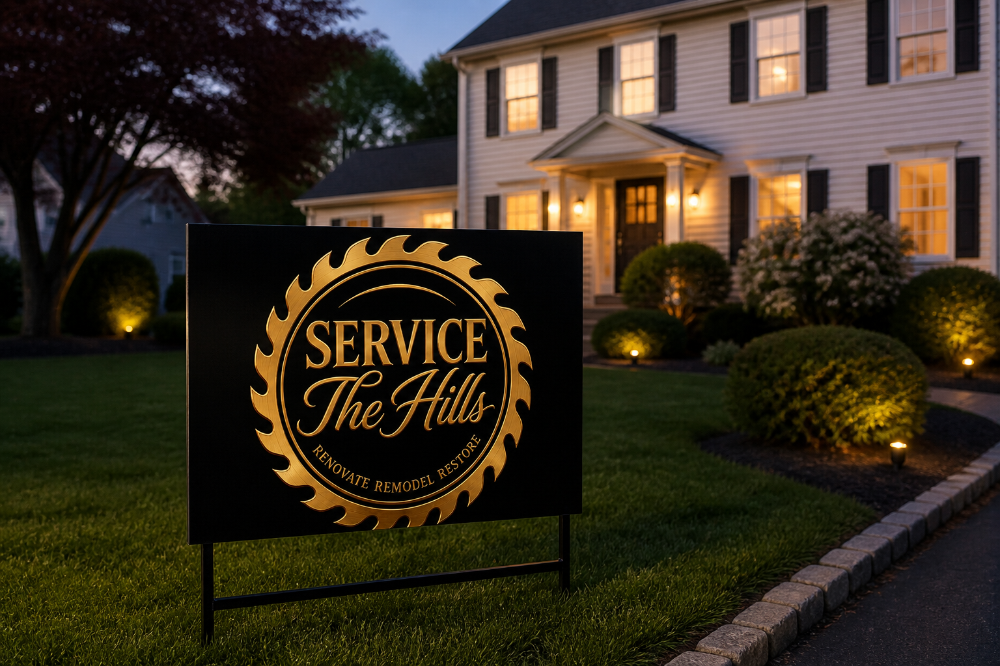

Identity system
Caps–script wordmark.
Three lines, one hierarchy. Do not copy the saw blade for every brand—the text structure is the shared system.

- Top · Caps serifBold all-caps classic serif (SERVICE). Metallic or embossed feel on dark grounds.
- Middle · ScriptElegant connected script (The Hills). Largest visual weight; center small connecting words.
- Bottom · TaglineSmall all-caps (RENOVATE · REMODEL · RESTORE). Quiet service line under the lockup.
Applications
Seal, sign, stationery, fleet.

